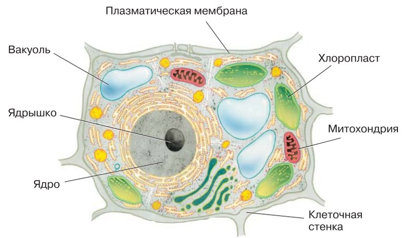
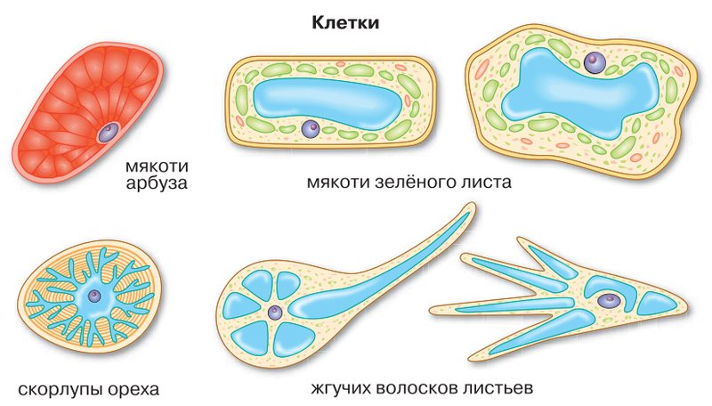
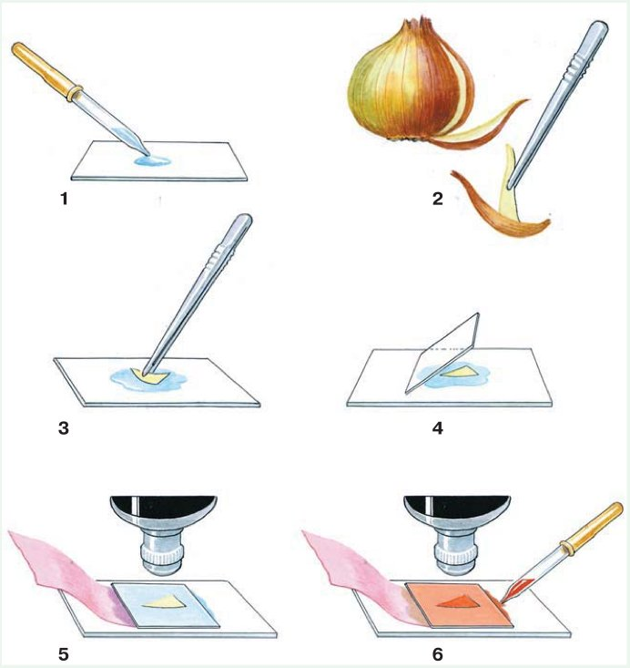
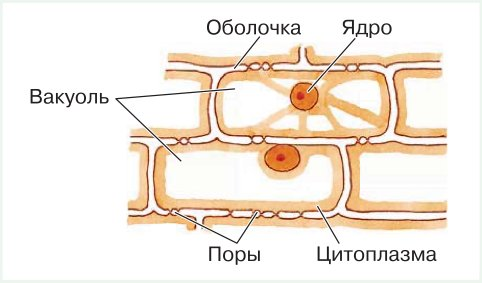
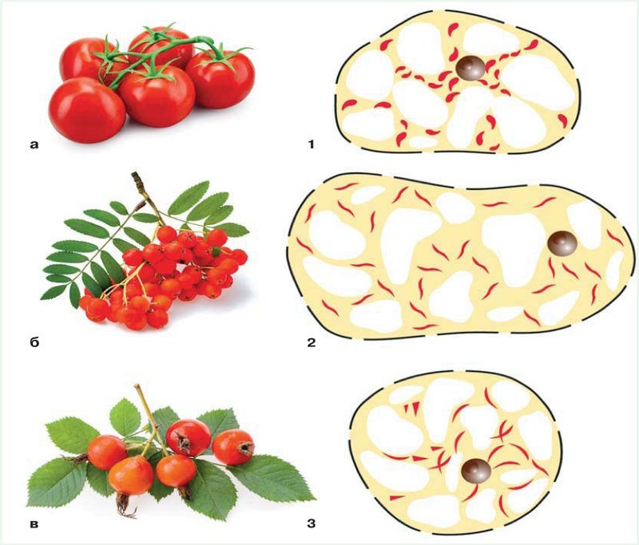
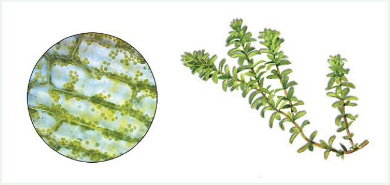
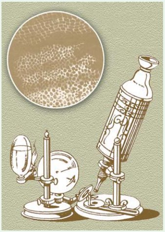

Строение растительной клетки
Амина, это параграф о том, как устроен самый маленький «кирпичик» растения — клетка.
Представь маленький дом. Вокруг него крепкий забор, у двери стоит охранник и решает, кого пустить. Внутри есть кабинет директора с чертежами всего дома, кухня на солнечных батареях, кладовки с запасами, баки с водой и своя электростанция.
Растительная клетка устроена очень похоже. Только она такая крошечная, что увидеть её можно лишь в микроскоп.
В этом параграфе ты узнаешь, как называется каждая часть клетки и зачем она нужна. А ещё сама приготовишь препарат из кожицы лука и рассмотришь клетки под микроскопом. Вот четыре главные мысли:
У каждого шага написано, на какой странице учебника искать. Внизу шага есть «Подробнее, как в учебнике»: там всё, что есть на этих страницах, ничего не пропущено. Сначала учи по коротким шагам, а перед уроком открой «подробнее».
Надпись вверху шага подскажет, откуда он: синяя — из учебника, золотая — задание учебника, оранжевая — сверх учебника (пересказ, словарик, игры, самопроверка). В «Содержании» шаги так же разбиты на группы.
Подробнее, как в учебнике · с. 14
- Параграф начинается на с. 14. Название: «§ 2. Строение растительной клетки».
- На полях — рубрика «Вспомните» с тремя вопросами. Она разобрана на следующем шаге.
- Текст параграфа занимает с. 14–16, в нём два рисунка: рис. 8 «Строение растительной клетки» и рис. 9 «Формы растительных клеток».
- Слова для запоминания (рубрика «Запомните», с. 16): клеточная мембрана, клеточная стенка, цитоплазма, ядро, ядрышко, хромосомы, митохондрии, вакуоли, пластиды (хлоропласты, лейкопласты, хромопласты), хлорофилл. Все они есть в словарике.
- Дальше в параграфе: «Проверьте себя», «Подумайте!», «Шаги к успеху» (с. 16), «Моя лаборатория» с тремя лабораторными работами (с. 17–20), «Это интересно» (с. 20) и «Задания для любознательных» (с. 21). Всё это разобрано по шагам.
Вспомни, что ты уже знаешь
В начале параграфа, на полях, стоит рубрика «Вспомните». Это вопросы про то, что ты уже проходила в 5 классе. Попробуй ответить вслух, а если не получается, открой подсказку.
Что такое клетка?
Почему для изучения клеток необходимо использовать увеличительные приборы?
Почему микроскоп, с которым вы работаете, называют световым?
Подсказки
1. Вспомни: из чего состоят все живые организмы — и растения, и животные, и ты сама? Клетка — самая маленькая часть живого, которая может сама жить.
2. Можно ли увидеть одну клетку лука просто глазами? Подумай, какого клетки размера.
3. Вспомни, как устроен школьный микроскоп: зачем у него зеркальце или лампочка снизу? Что проходит сквозь препарат, прежде чем попасть тебе в глаз?
Какая она, растительная клетка?
У каждой клетки, у любого живого существа, есть три обязательные части: клеточная мембрана, цитоплазма и генетический аппарат (в нём хранятся «чертежи» клетки, это ядро).
Но у клеток растений есть и свои особенности. Именно они отличают их от клеток грибов, животных и других царств. Посмотри на схему из учебника: здесь подписаны все главные части.

На рисунке мембрана подписана «плазматическая мембрана», а в тексте её называют «клеточная мембрана» или просто «мембрана». Это одно и то же.
Подробнее, как в учебнике · с. 14
- Вы уже знаете, что каждая клетка имеет три обязательные части: клеточную мембрану, цитоплазму и генетический аппарат.
- Клетки растений имеют особенности строения, которые отличают их от клеток организмов из других царств (рис. 8).
- Рис. 8 «Строение растительной клетки». Подписи на рисунке: плазматическая мембрана, клеточная стенка, вакуоль, ядро, ядрышко, хлоропласт, митохондрия.
Оболочка и мембрана
Снаружи у растительной клетки сразу две «одёжки»: плотная оболочка и под ней тонкая плёнка. Сравни их.
Клеточная оболочка (стенка)
Как забор с калитками
Есть у клеток растений, кроме мембраны. В её состав входит целлюлоза. Оболочка делает клетку прочной и задаёт ей форму.
В оболочке есть поры (дырочки), поэтому через неё проходят вода, соли и многие органические вещества.
Мембрана
Как охранник у двери
Тонкая плёнка под оболочкой. Одни вещества она легко пропускает, другие не пропускает. Это называется полупроницаемость.
Так мембрана решает, что войдёт в клетку из окружающей среды и что выйдет из клетки наружу. Работает, пока клетка жива.
А почему?
Представь сито на кухне: вода проходит, а крупа остаётся. Мембрана похожа на очень умное сито: сама выбирает, что пропустить. А когда клетка погибает, «сито» перестаёт выбирать.
Подробнее, как в учебнике · с. 14
- Клетки растений, кроме клеточной мембраны, имеют ещё и клеточную оболочку (стенку). В её состав входит целлюлоза. Оболочка придаёт клетке прочность и определяет её форму.
- В оболочке есть поры, поэтому она проницаема для воды, солей и многих органических веществ.
- Мембрана — тонкая плёнка, которая находится под оболочкой клетки. Для одних веществ она легко проницаема, для других непроницаема.
- Полупроницаемость мембраны сохраняется, пока клетка жива. Так мембрана регулирует поступление веществ из окружающей среды в клетку и из клетки в окружающую среду.
Цитоплазма
Представь банку с киселём, в котором плавают ягоды. Кисель — это цитоплазма, внутренняя среда клетки. Слово пришло из греческого: китос — сосуд, плазма — образование.
Цитоплазма полужидкая, поэтому внутри клетки всё может двигаться. В ней находятся органоиды (от греч. органон — орган) — маленькие «органы» клетки, и клеточные включения.
Цитоплазма объединяет все части клетки и помогает им работать вместе.
При сильном нагревании и при замораживании цитоплазма разрушается, и клетка погибает.
Подробнее, как в учебнике · с. 14
- Цитоплазма (от греч. китос — сосуд и плазма — образование) — внутренняя среда клетки.
- Особенность цитоплазмы — её полужидкое состояние, благодаря которому возможно движение внутри клетки.
- В цитоплазме находятся различные органоиды (от греч. органон — орган) и клеточные включения.
- Цитоплазма объединяет все клеточные структуры и обеспечивает их взаимодействие.
- При сильном нагревании и замораживании цитоплазма разрушается, и тогда клетка погибает.
Ядро и хромосомы
В цитоплазме лежит небольшое плотное ядро. Это как кабинет директора: оттуда управляют всей жизнью клетки.
В ядре хранятся хромосомы (от греч. хрома — краска и сома — тельце). В них записаны все сведения о клетке и обо всём организме — это наследственная информация. Как чертежи дома: по ним можно построить точно такой же.
От хромосом зависит, почему дети похожи на родителей. Вот почему у тебя, например, могут быть мамины глаза.
В ядре может быть одно или несколько ядрышек.
А почему ядро такое сложное?
В обычный микроскоп ядро похоже на простое тёмное пятнышко. Но в электронный микроскоп (он увеличивает гораздо сильнее) учёные увидели, что ядро устроено очень сложно. Так и должно быть: ведь оно управляет всей клеткой и хранит хромосомы.
Подробнее, как в учебнике · с. 15
- В цитоплазме находится небольшое плотное ядро.
- С помощью электронного микроскопа установили, что ядро клетки имеет очень сложное строение. Это связано с тем, что ядро регулирует процессы жизнедеятельности клетки.
- В ядре расположены носители наследственной информации о клетке и организме в целом — хромосомы (от греч. хрома — краска и сома — тельце).
- От хромосом зависит сходство родителей и потомства.
- В ядре может находиться одно или несколько ядрышек.
Три вида пластид
Главная особенность клеток растений — в них есть пластиды и вакуоли.
Пластиды — это множество мелких телец в цитоплазме. Одни бесцветные, другие окрашены в разные цвета. Их три вида, и у каждого своя работа:
Хлоропласты — «кухня» клетки: на свету готовят пищу. Хромопласты — «краски». Лейкопласты — «кладовки».
Что такое фотосинтез?
Это когда растение на свету само делает себе питательные вещества из воды и воздуха. Происходит это в зелёных хлоропластах. Подробно про фотосинтез будет в следующих параграфах.
Подробнее, как в учебнике · с. 15
- Характерная особенность клеток растений — наличие в них пластид и вакуолей.
- Пластиды — многочисленные мелкие тельца. Они находятся в цитоплазме и бывают бесцветными или окрашенными в различные цвета.
- В бесцветных пластидах — лейкопластах (от греч. лейкос — белый и пластос — вылепленный) накапливаются запасы питательных веществ.
- Пластиды жёлтого и красного цвета — хромопласты (от греч. хрома — краска). Они определяют окраску цветов, осенних листьев, зрелых плодов.
- Самое важное значение имеют пластиды зелёного цвета — хлоропласты (от греч. хлорос — зелёный). В них содержится хлорофилл. В хлоропластах происходит процесс фотосинтеза.
Пластиды меняют цвет
Пластиды умеют превращаться из одного вида в другой. В учебнике два примера.
Пример 1. Картошка на свету. Если клубни картофеля полежат на свету, они зеленеют. Это бесцветные лейкопласты превратились в зелёные хлоропласты.
Пример 2. Осенние листья. Осенью в листьях разрушается хлорофилл, и хлоропласты превращаются в хромопласты. Поэтому листья желтеют и краснеют.
Позеленевшие места на картошке взрослые обычно срезают: вместе с зелёным цветом в них копится вредное вещество.
Подробнее, как в учебнике · с. 15
- Пластиды могут превращаться из одного вида в другой. Так, лейкопласты могут превращаться в хлоропласты. Пример — позеленение клубней картофеля на свету.
- Осенняя окраска листьев связана с тем, что разрушается хлорофилл и хлоропласты превращаются в хромопласты.
Вакуоли
Разрежь спелый арбуз или помидор — и потечёт сок. Откуда он? Из вакуолей.
Вакуоли (от лат. вакуус — пустой) — это полости, «пузырьки» внутри клетки. Их ограничивает мембрана. Они заметны почти во всех клетках растений, особенно в старых.
Внутри вакуолей — клеточный сок. Это вода, в которой растворены органические и неорганические вещества. Когда мы режем сочный плод, мы повреждаем клетки, и сок вытекает из вакуолей.
А почему «пустой», если там сок?
В микроскоп вакуоль выглядит как светлое «пустое» место среди зернистой цитоплазмы. Поэтому её так и назвали. На самом деле она заполнена клеточным соком.
Подробнее, как в учебнике · с. 15–16
- Почти во всех растительных клетках, особенно старых, хорошо заметны полости — вакуоли (от лат. вакуус — пустой), ограниченные мембраной.
- Вакуоли содержат клеточный сок — водный раствор органических и неорганических соединений.
- Разрезая спелый плод или другую сочную часть растения, мы повреждаем клетки, и из их вакуолей вытекает сок.
Митохондрии — электростанции
Любому дому нужна энергия, чтобы горел свет и работали приборы. Клетке тоже.
Митохондрии (от греч. митос — нить и хондрион — зёрнышко, крупинка) — органоиды овальной формы. Их можно рассмотреть в цитоплазме при большом увеличении микроскопа.
В митохондриях выделяется энергия, которая нужна для работы всех остальных частей клетки. Поэтому их часто называют «энергетическими станциями клетки».
Сколько в клетке вакуолей, пластид и митохондрий, какой толщины оболочка и как всё внутри расположено — это бывает очень по-разному. Всё зависит от того, какую работу клетка делает в растении.
Подробнее, как в учебнике · с. 16
- Важную роль в жизнедеятельности клетки играют митохондрии (от греч. митос — нить и хондрион — зёрнышко, крупинка) — органоиды овальной формы. Их можно рассмотреть в цитоплазме клетки при большом увеличении в микроскоп.
- В митохондриях протекают процессы, в результате которых выделяется энергия, необходимая для работы других структур клетки. Поэтому митохондрии часто называют «энергетическими станциями клетки».
- Количество вакуолей, пластид, митохондрий в клетках, толщина клеточной оболочки, расположение внутренних частей клетки сильно различаются и зависят от того, какую функцию выполняет клетка в организме растения.
Такие разные клетки
Клетки разных органов растения очень не похожи друг на друга: у них разный цвет, форма и размер. Посмотри на рисунок 9.

Что можно заметить на рисунке
Сравни клетку арбуза и клетку листа: где много зелёных «зёрнышек», а где их нет совсем? Сравни клетку листа и клетку жгучего волоска: какая из них длинная и острая? Подумай, как форма помогает каждой клетке делать свою работу.
Со строением растительной клетки можно познакомиться, если приготовить препараты и рассмотреть их под микроскопом: кожицу чешуи лука, клетки листа элодеи, клетки плодов томата, рябины и шиповника. Этим мы займёмся в «Моей лаборатории».
Подробнее, как в учебнике · с. 15–16
- Окраска, форма и размеры клеток разных органов растений очень разнообразны (рис. 9).
- Рис. 9 «Формы растительных клеток». Подписи: клетки мякоти арбуза; мякоти зелёного листа (две клетки); скорлупы ореха; жгучих волосков листьев (две клетки).
- Со строением растительной клетки можно познакомиться, приготовив и рассмотрев под микроскопом препараты чешуи кожицы лука, клеток листа элодеи и клеток плодов томатов, рябины и шиповника.
Как составить план параграфа
Учебник советует: чтобы лучше усвоить параграф, составь его план. План — это короткий список главных мыслей текста по порядку.
Три правила хорошего плана:
- пункты плана отражают главные мысли;
- пункты связаны между собой по смыслу;
- пункты написаны кратко и чётко.
Как это сделать: раздели текст на части (смысловые единицы) и в каждой найди главную мысль. Помогут два вопроса:
«О чём здесь говорится?»
Помогает разбить текст на части. Сменилась тема — началась новая часть.
«Что об этом говорится?»
Помогает найти в каждой части самое главное.
Пример на другом тексте
Текст: «Школьный микроскоп состоит из нескольких частей. Сверху — окуляр, в него смотрят глазом. Внизу — объективы, они увеличивают предмет. Препарат кладут на столик. Снизу его освещает зеркальце или лампа. Чтобы изображение стало чётким, крутят винты. Работать с микроскопом нужно аккуратно: не трогать стёкла пальцами и переносить микроскоп двумя руками».
План: 1) Из чего состоит микроскоп. 2) Как навести изображение. 3) Правила работы с микроскопом.
Видишь: пунктов мало, они короткие и идут по порядку текста.
Составь план § 2. Подсказка: читай параграф по кусочкам и задавай себе два вопроса. Шаги 3–11 этой страницы уже разбиты на части — можешь сверить свой план с их названиями, но сформулируй пункты своими словами.
Подробнее, как в учебнике · с. 16
- Рубрика «Шаги к успеху». Чтобы лучше усвоить материал параграфа, нужно составить его план. План должен отвечать требованиям: 1) пункты плана должны отражать главные мысли; 2) пункты плана должны быть связаны между собой по смыслу; 3) пункты плана должны быть сформулированы кратко и чётко.
- При составлении плана текст делится на части (смысловые единицы), и в каждой из них находится главная мысль. Чтобы было легче, при чтении задавайте два вопроса: «О чём здесь говорится?» и «Что об этом говорится?». Первый вопрос поможет разбить текст на смысловые единицы, а второй — выделить самое существенное, главное в этой части текста.
Препарат кожицы чешуи лука
Цель работы: научиться самой готовить препарат кожицы чешуи лука, чтобы рассмотреть под микроскопом, из каких клеток она состоит.
Материалы и оборудование: луковица, раствор йода, фильтровальная бумага, марля, пипетка, пинцет, препаровальная игла, микроскоп, предметное и покровное стёкла, вода.
Работу делают на уроке, с учителем, или дома вместе со взрослыми. Стёкла тонкие и острые по краям: бери их за края, не нажимай сильно. Йод пачкает руки и одежду, его не пробуют на вкус.

Ход работы, пункты 1–6 — как приготовить препарат:
Рассмотри на рисунке 10, в каком порядке готовят препарат.
Тщательно протри предметное стекло марлей.
Пипеткой капни на стекло 1–2 капли воды.
Пинцетом осторожно сними маленький кусочек прозрачной кожицы с внутренней стороны чешуи лука.
Положи кожицу в каплю воды и расправь кончиком препаровальной иглы.
Накрой кожицу покровным стеклом, как на рисунке. Лишнюю воду оттяни фильтровальной бумагой.
Подсказки
Кожица должна быть совсем тонкой и прозрачной, как плёнка. Если она сложилась — расправь иглой, иначе клетки лягут в несколько слоёв и ничего не будет видно.
Покровное стекло опускай наклонно, с одного края (картинка 4) — так под ним не останется пузырьков воздуха.
Подробнее, как в учебнике · с. 17–18
- «Моя лаборатория». Рубрика «Исследуйте». Работа «Приготовление и рассматривание препарата кожицы чешуи лука под микроскопом».
- Цель работы: научиться самостоятельно приготавливать препарат кожицы чешуи лука для изучения клеточного строения под микроскопом.
- Материалы и оборудование: луковица, раствор йода, фильтровальная бумага, марля, пипетка, пинцет, препаровальная игла, микроскоп, предметное и покровное стёкла, вода.
- Ход работы. 1. Рассмотрите на рисунке 10 последовательность приготовления препарата. 2. Подготовьте предметное стекло, тщательно протерев его марлей. 3. Пипеткой нанесите 1–2 капли воды на предметное стекло. 4. При помощи пинцета осторожно снимите маленький кусочек прозрачной кожицы с внутренней поверхности чешуи лука. 5. Положите кусочек кожицы в каплю воды и расправьте кончиком препаровальной иглы. 6. Накройте кожицу покровным стеклом, как показано на рисунке. Фильтровальной бумагой оттяните лишнюю воду.
- Рис. 10 «Приготовление микропрепарата кожицы чешуи лука»: шесть пронумерованных картинок — капля воды из пипетки на стекле; кожицу снимают пинцетом с чешуи луковицы; кожицу кладут в каплю; накрывают покровным стеклом; под микроскопом бумагой оттягивают воду; пипеткой добавляют йод, а бумагой с другой стороны оттягивают лишний раствор.
Смотрим клетки лука
Ход работы, пункты 7–13 — что делать с готовым препаратом:
Рассмотри препарат при малом увеличении. Отметь, какие части клетки ты видишь.
Окрась препарат раствором йода. Лишний раствор оттяни фильтровальной бумагой с противоположной стороны.
Рассмотри окрашенный препарат. Какие изменения произошли?
Рассмотри препарат при большом увеличении. Найди тёмную полосу вокруг клетки — это оболочка. Под ней золотистое вещество — цитоплазма (она может занимать всю клетку или лежать около стенок). В цитоплазме хорошо видно ядро. Найди вакуоль с клеточным соком (она отличается от цитоплазмы по цвету).
Зарисуй 2–3 клетки кожицы лука. Подпиши оболочку, цитоплазму, ядро, вакуоль с клеточным соком (рис. 11).
Подумай, зачем препарат кожицы чешуи лука окрашивали раствором йода.
Сделай вывод.

Подсказки
К пункту 9 и 12. Сравни, что было видно до йода и после. Какие части клетки стали заметнее? Вот и ответ, зачем красят.
К пункту 11. Рисуй простым карандашом, крупно, клетки рядом друг с другом, как кирпичики. Подписи ставь сбоку и проводи к ним линии, как на рис. 11.
К пункту 13. Вывод отвечает на цель работы: получилось ли приготовить препарат и что ты увидела. Начни так: «Я научилась… Под микроскопом видно, что кожица лука состоит из… В каждой клетке есть…».
Подробнее, как в учебнике · с. 18
- 7. Рассмотрите приготовленный препарат при малом увеличении. Отметьте, какие части клетки вы видите. 8. Окрасьте препарат раствором йода. Фильтровальной бумагой с противоположной стороны оттяните лишний раствор. 9. Рассмотрите окрашенный препарат. Какие изменения произошли?
- 10. Рассмотрите препарат при большом увеличении. Найдите на нём тёмную полосу, окружающую клетку, — оболочку; под ней золотистое вещество — цитоплазму (она может занимать всю клетку или находиться около стенок). В цитоплазме хорошо видно ядро. Найдите вакуоль с клеточным соком (она отличается от цитоплазмы по цвету).
- 11. Зарисуйте 2–3 клетки кожицы чешуи лука. Обозначьте оболочку, цитоплазму, ядро, вакуоль с клеточным соком (рис. 11). 12. Подумайте, зачем препарат кожицы чешуи лука окрашивали раствором йода. 13. Сделайте вывод.
- Рис. 11 «Клеточное строение кожицы чешуи лука». Подписи: оболочка, ядро, вакуоль, поры, цитоплазма.
Пластиды в клетках плодов томата, рябины, шиповника
Цель работы: познакомиться с особенностями строения пластид в клетках мякоти плодов томата, рябины, шиповника.
Материалы и оборудование: плоды томата, рябины, шиповника, вода, пипетка, пинцет, препаровальная игла, микроскоп, предметное и покровное стёкла.
Приготовь препараты клеток плодов. Иглой перенеси частичку мякоти плода в каплю воды на предметном стекле, кончиком иглы раздели мякоть на клетки и накрой покровным стеклом.
Рассмотри препарат под микроскопом. Найди в клетках пластиды, отметь их окраску.
Зарисуй строение клеток.
Сравни форму и особенности пластид с рисунком 12. Определи, под каким номером нарисованы клетки плодов рябины, томата, шиповника, и соотнеси их с фотографиями плодов.
Сравни клетки мякоти плодов с клетками листа элодеи и кожицы чешуи лука.
Обсуди результаты лабораторных работ с одноклассниками.
Исходя из цели работы (с. 18) и своих наблюдений, сделай выводы.

Подсказки
К пункту 2. Вспомни шаг 7: какие пластиды бывают красными и жёлтыми? Как они называются?
К пункту 4. Смотри не только на цвет, но и на форму пластид: где они короткие и толстые, как запятые, а где длинные и тонкие, как ниточки? Сравни со своим препаратом. Номер для каждого плода определи сама.
К пункту 5. Клетки элодеи ты рассмотришь в следующей работе (шаг 16). Сравни, какого цвета пластиды в листе и в плодах и есть ли пластиды в кожице лука.
Помидоры растут на огородах и в теплицах Дагестана, а шиповник — в горах и по склонам. Для этой работы всё можно найти на рынке или на даче.
Подробнее, как в учебнике · с. 18–19
- Работа «Пластиды в клетках плодов томатов, рябины, шиповника». Цель работы: познакомиться с особенностями строения пластид в клетках мякоти плодов томата, рябины, шиповника.
- Материалы и оборудование: плоды томата, рябины, шиповника, вода, пипетка, пинцет, препаровальная игла, микроскоп, предметное и покровное стёкла.
- Ход работы. 1. Приготовьте препараты клеток плодов томатов, рябины, шиповника: в каплю воды на предметном стекле иглой перенесите частицу мякоти плода, кончиком иглы разделите мякоть на клетки и накройте покровным стеклом. 2. Рассмотрите препарат под микроскопом. Найдите в клетках пластиды, отметьте их окраску. 3. Зарисуйте строение клеток.
- 4. Сравните форму и особенности пластид изученных клеток с изображёнными на рисунке 12. Определите, под каким номером изображены клетки плодов рябины, томата, шиповника, соотнесите их с рисунками плодов. 5. Сравните клетки мякоти плодов с клетками листа элодеи и кожицы чешуи лука. 6. Обсудите с товарищами по классу результаты лабораторных работ. 7. На основе цели работы (см. с. 18) и проведённых наблюдений сделайте выводы.
- Рис. 12 «Пластиды в клетках плодов»: слева фотографии плодов, обозначенные буквами а, б, в (томаты, рябина, шиповник), справа рисунки клеток под номерами 1, 2, 3.
Строение клетки листа элодеи
Элодея — водное растение, его часто держат в аквариумах. Листики у неё тонкие, поэтому клетки видно без всякой кожицы.
Цель работы: познакомиться со строением клетки листа элодеи.
Материалы и оборудование: элодея, вода, пипетка, пинцет, препаровальная игла, микроскоп, предметное и покровное стёкла.

Приготовь препарат: отдели лист от стебля, положи его в каплю воды на предметное стекло и накрой покровным стеклом.
Рассмотри препарат под микроскопом. Найди в клетках пластиды, отметь их окраску.
Сравни то, что видишь в микроскоп, с рисунком 13.
Зарисуй строение клетки листа элодеи.
Сделай вывод.
Подсказки
К пункту 2. Какого цвета «зёрнышки» в клетках? Вспомни, как называются пластиды такого цвета и какое вещество их окрашивает (шаг 7).
К пункту 5. Что есть в клетке элодеи, чего не было в клетках кожицы лука? Начни вывод со слов: «В клетках листа элодеи я увидела…».
Подробнее, как в учебнике · с. 19–20
- Работа «Строение клетки листа элодеи». Цель работы: познакомиться со строением клетки листа элодеи.
- Материалы и оборудование: элодея, вода, пипетка, пинцет, препаровальная игла, микроскоп, предметное и покровное стёкла.
- Ход работы. 1. Приготовьте препарат клеток листа водного растения элодеи: отделите лист от стебля, положите его в каплю воды на предметное стекло и накройте покровным стеклом. 2. Рассмотрите препарат под микроскопом. Найдите в клетках пластиды, отметьте их окраску. 3. Сравните увиденное под микроскопом с рисунком 13. 4. Зарисуйте строение клетки листа элодеи. 5. Сделайте вывод.
- Рис. 13 «Пластиды в клетках листа элодеи»: слева клетки листа под микроскопом, справа веточка элодеи.
Роберт Гук открывает клетки
Клетки открыл англичанин Роберт Гук в 1665 году. Он сам сделал микроскоп и рассмотрел в него тонкий срез пробки — коры пробкового дуба.
Гук увидел множество крошечных ячеек, похожих на пчелиные соты. В учебнике сказано, что он насчитал до 125 миллионов таких «пор» на одном квадратном дюйме (дюйм — это 2,5 см, так что квадратный дюйм чуть больше почтовой марки).
Такие же ячейки Гук нашёл в сердцевине бузины и в стеблях других растений. Он назвал их клетками. С этого началось изучение клеточного строения растений.

Свои открытия Гук описал в книге «Микрография, или Описание малых предметов». Он писал: «Это могло бы казаться невероятным, если бы в этом не убеждал нас микроскоп с очевидной наглядностью».
А ядро клетки открыли гораздо позже, только в 1831 году, цитоплазму — ещё позднее.
Подробнее, как в учебнике · с. 20
- Рубрика «Это интересно». Существование клеток открыл англичанин Роберт Гук в 1665 г.
- В своей книге «Микрография, или Описание малых предметов» он писал: «Это могло бы казаться невероятным, если бы в этом не убеждал нас микроскоп с очевидной наглядностью».
- Рассматривая в сконструированный им микроскоп тонкий срез пробки у пробкового дуба, он насчитал до 125 млн пор, или ячеек, в одном квадратном дюйме (2,5 см) (рис. 14).
- В сердцевине бузины, стеблях различных растений Р. Гук обнаружил такие же ячейки и назвал их клетками. Так началось изучение клеточного строения растений.
- Ядро клетки было открыто только в 1831 г., а цитоплазма ещё позднее.
- Рис. 14 «Вид клеток пробки дуба на собственном рисунке Р. Гука»: в круге ячейки пробки, рядом микроскоп Гука.
Задания для любознательных
Хочешь увидеть «исторический» препарат Р. Гука из XVII века? Его можно приготовить вместе со взрослыми — попроси помочь учителя или родителей. Тонкий срез светлой пробки кладут в спирт. Через несколько минут начинают по капле добавлять воду, чтобы выгнать из клеток воздух: он затемняет препарат. Потом срез рассматривают под микроскопом. Ты увидишь то же, что Гук.
Осторожно: срез пробки делает взрослый (нужен острый нож), и со спиртом работает тоже взрослый.
Прочитай отрывок из книги И. И. Акимушкина «Занимательная биология» и ответь на вопросы:
• Используя дополнительные источники, выясни, у каких растений можно увидеть клетки невооружённым глазом.
• Найди в тексте утверждение, которое указывает на единство живой природы.
Подсказка к первому: подумай о сочных плодах. Разрежь спелый арбуз или помидор и посмотри на мякоть на изломе — видны ли крошечные блестящие «зёрнышки»? Проверь по энциклопедии или спроси учителя.
Подсказка ко второму: «единство» значит, что у всего живого есть что-то общее. Найди предложение, где сказано, из чего сложены и растения, и животные.
Всё живое, и растения, и животные, сложено из клеток. Первым клетку увидел Роберт Гук в 1665 году: он рассмотрел в самодельный микроскоп ломтик пробки. Но тогда его открытие мало кого впечатлило.
Только через 175 лет, в 1839 году, учёные Шлейден и Шванн доказали, что из клеток состоит всё живое. Клетки обычно крошечные, но бывают и такие большие, что видны без микроскопа.
Подробнее, как в учебнике · с. 21
- Рубрика «Задания для любознательных». Задание 1: приготовить «исторический» препарат Р. Гука из XVII в. вместе со взрослыми (попросить учителя или родителей): положить тонкий срез светлой пробки в спирт; через несколько минут начать добавлять воду по каплям, чтобы удалить из клеток воздух, затемняющий препарат; рассмотреть срез под микроскопом. Вы увидите то же, что Р. Гук в XVII в.
- Задание 2: прочитать отрывок из книги «Занимательная биология» И. И. Акимушкина и ответить на вопросы (они перечислены выше).
- Отрывок «"Кожа" клетки». Всё живое на Земле, и растения, и животные, сложено из клеток, как молекулы из атомов. Сегодня это утверждение мало кого удивит.
- Первым из людей клетку увидел Роберт Гук, ассистент известного физика Бойля. Это случилось в Англии в 1665 году. Тогда натуралисты и не только те, кто мог позволить себе такое развлечение, увлекались лупами и микроскопами: покупали или делали их сами и смотрели в увеличительные стёкла на всё, что попадалось под руку.
- Роберт Гук сделал микроскоп сам и рассматривал в него разные вещи, которые открывали ему свои невидимые для глаза свойства. Позднее он рассказал об этом в книге «Микрография».
- Однажды ему попалась пробка. Гук нарезал её на тонкие ломтики, положил под объектив и увидел стройные ряды ячеек, или клеток, как он их назвал. Он, как смог, зарисовал клетки пробкового дуба. Но открытие Гука и его рисунки не произвели большого впечатления на современников.
- Прошло почти 175 лет, и только в 1839 году была создана общая теория клеточного строения. Ботаник Маттиас Шлейден и зоолог Теодор Шванн независимо друг от друга доказали, что из клеток сложена не только кора пробкового дуба, но и вообще все растительные и животные ткани, всё живое на планете.
- Клетки растений и животных в общем схожи. Одно из различий: оболочки клеток растений состоят из клетчатки — высокомолекулярного сахара, а у животных в основном из липидов — жироподобных веществ.
- Размеры клеток обычно очень малы. В капле нашей крови плавает около 5 миллионов красных кровяных шариков, и каждый из них — клетка. В длину они около 7–8 микрон, а микрон — тысячная часть миллиметра.
- Бактерии, каждая из которых тоже клетка, ещё меньше: в капле воды 40 миллионов бактерий живут так же просторно, как рыбы в пруду.
- Но бывают клетки и очень большие, которые видны невооружённым глазом.
Вся клетка на одной схеме
Помнишь дом из первого шага? Вот кто в нём за что отвечает. Закрой нижнюю строчку в каждой плитке пальцем и попробуй вспомнить сама.
Стенка с целлюлозой, пластиды и вакуоли — это то, чем клетки растений отличаются от клеток других царств. Подробнее — на шагах 3–11.
Словарик: снаружи и внутри
ИграНажми на карточку, и она перевернётся. Словарик из двух частей, открой все карточки.
Словарик: пластиды и вакуоли
ИграВторая часть: пластиды, вакуоли и митохондрии.
Кто чем занят в клетке
ИграУ каждой части клетки своя работа. Нажми на часть клетки слева, потом на её работу справа.
Какие это пластиды?
ИграПластиды бывают трёх видов. Прочитай карточку и выбери, про какие пластиды она.
Приготовь препарат
ИграТы готовишь препарат кожицы лука. Нажимай на действия в том порядке, в каком их надо делать. Номера спрятаны, вспоминай сама.
Найди лишнее
ИграТри из одной компании, одно чужое. Найди чужое.
Проверь себя
Вопросы из учебника
Это вопросы рубрики «Проверьте себя», номера такие же, как в твоём учебнике. Рядом с каждым написано, на каком шаге искать ответ. Отвечай своими словами: так лучше запоминается, и учитель услышит, что ты поняла, а не заучила.
Какое строение имеет растительная клетка?
Подсказка: возьми рис. 8 и перечисли части по порядку — снаружи внутрь. Про каждую скажи хотя бы одно слово о её работе.
Шаги 3–11 · от схемы клетки до форм клетокКакую роль выполняют пластиды в клетках растений?
Подсказка: пластид три вида — назови каждый и его работу. Не забудь, что они умеют превращаться.
Шаги 7–8 · ПластидыКакую функцию выполняет клеточная мембрана?
Подсказка: вспомни «охранника у двери» и слово «полупроницаемость».
Шаг 4 · Оболочка и мембранаКакую функцию выполняет клеточная стенка (оболочка) в клетках растений?
Подсказка: из чего она состоит, что даёт клетке и зачем в ней поры.
Шаг 4 · Оболочка и мембранаКакую функцию выполняет генетический аппарат клетки?
Подсказка: генетический аппарат — это ядро с хромосомами. Что ядро регулирует и что хранят хромосомы?
Шаг 6 · Ядро и хромосомыКакие особенности строения, отличающие их от клеток других организмов, имеют клетки растений?
Подсказка: найди в учебнике, какие части названы особенностью именно растительных клеток. Их три.
Шаги 4, 7 и 9Подробнее, как в учебнике · с. 16
- Все вопросы рубрики «Проверьте себя» перечислены выше.
- Рубрика «Запомните»: клеточная мембрана, клеточная стенка, цитоплазма, ядро, ядрышко, хромосомы, митохондрии, вакуоли, пластиды (хлоропласты, лейкопласты, хромопласты), хлорофилл. Все слова — в словарике (шаги 20–21).
- Вопрос рубрики «Подумайте!» — на последнем шаге. Задания лабораторных работ — шаги 13–16, «Задания для любознательных» — шаг 18.
Подумай: с чем связаны особенности строения растительных клеток?
Это вопрос из рубрики «Подумайте!». Прямо в тексте ответа нет, его надо сложить самой. Вот четыре «кирпичика». Открой их, а потом попробуй ответить своими словами, не подглядывая.
Растительная клетка, как и любая другая, имеет мембрану, цитоплазму и ядро, а ещё у неё есть прочная оболочка из целлюлозы, пластиды — зелёные хлоропласты, цветные хромопласты и бесцветные лейкопласты — и вакуоли с клеточным соком.